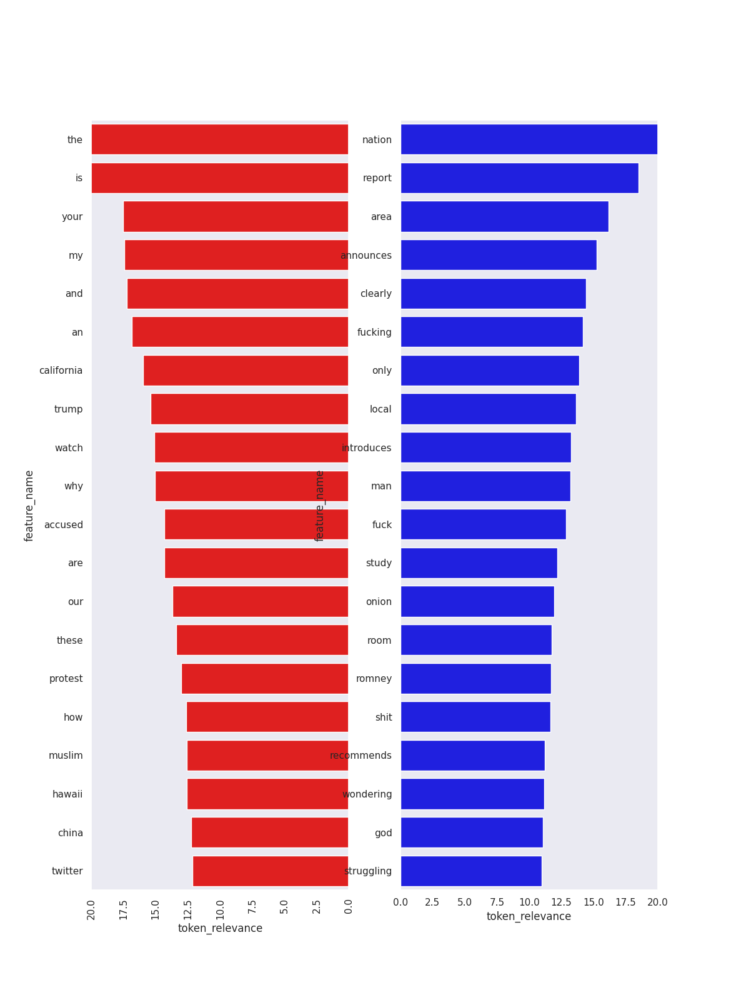

Sentiment Analysis using SVM
This project was done for my capstone in machine learning. I wanted to have the opportunity to learn a new data science technique that we hadn't worked with before. At first I wanted to try to make a GAN but after the instructor dissuaded me from that idea. So, I eventually decided to do a Natural Language Processing project. I used this dataset featuring over 28000 headlines sourced from HuffPost and the Onion. The goal was to classify each headline as either satrical (from the Onion) or not (from HuffPost) First the dataset was split using a 80/20 train/test split, then using TF-IDF vectorization each headline in the training set was converted to a vector that gave the frequency of tokens (words) in each headline relative to the rest of the training data. Finally a simple linear Support Vector Machine was fit to the training data. The same vectorization was applied to the test dataset and using the SVM fit to the training data to predict the label of each headline in the testing dataset. The accuracy of the model was around 85%. For more information about the processes used and limitations refer to my complete writeup.
